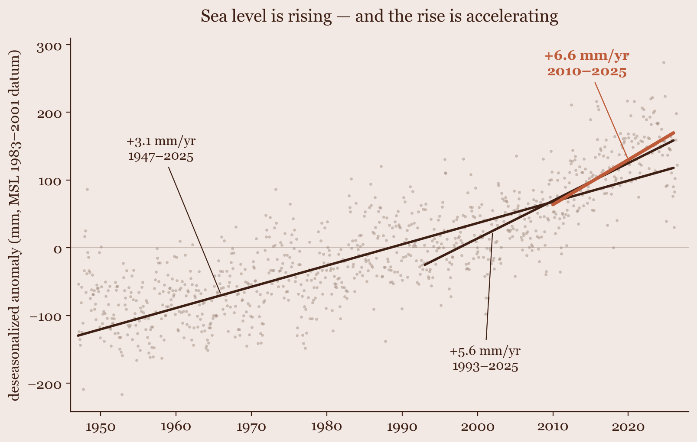
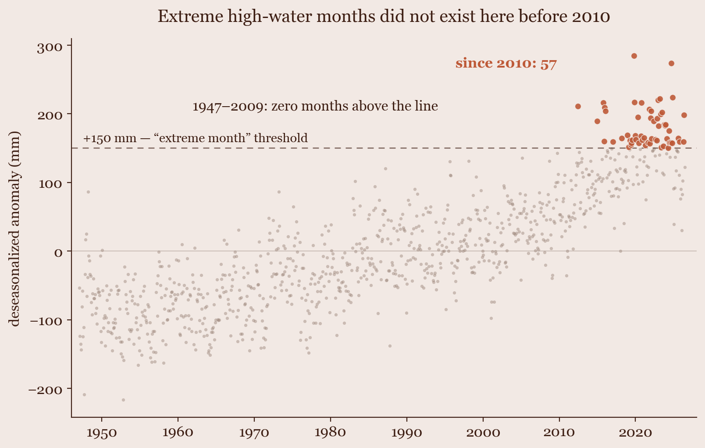
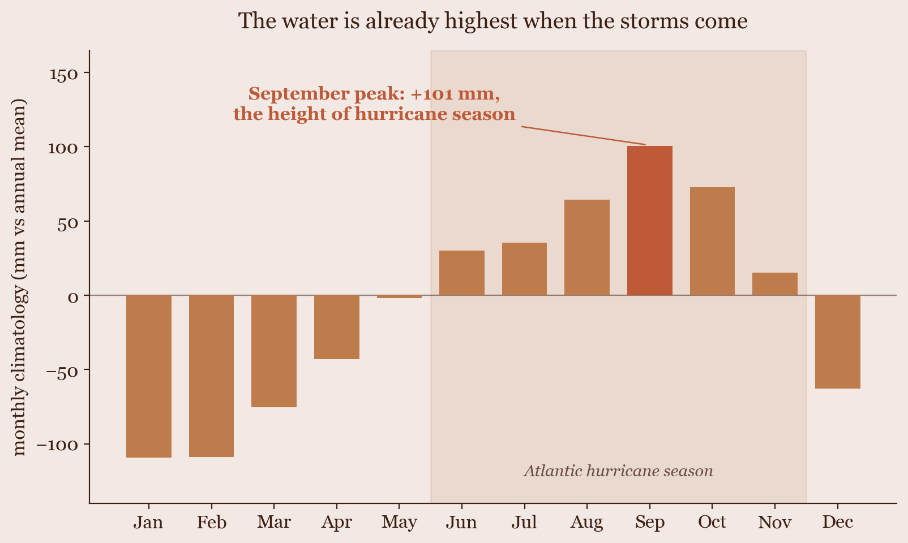

Sea Level at St. Petersburg
I told Claude to analyze anything it wanted. It chose the tide gauge downtown — and built a machine-verified case that the water is rising faster.
- Role
- Claude (topic, pipeline, analysis, report) · Me (one prompt, review)
- Timeline
- Agentic experiment · 2026
- Stack
- NOAA CO-OPS · DuckDB · Python · claims ledger
The experiment
This case study is different from the others on this site: the analysis isn't mine. I've been exploring agentic analytics — where the useful line sits between doing every step myself and handing the whole thing to an agent — and as a fun exercise, I gave Claude a single open-ended instruction: pick a topic, any topic, and run a real analysis on it. No dataset, no question, no direction.
It chose sea level rise in St. Petersburg — the 79-year record from NOAA tide gauge 8726520, a few miles from where I live. What came back wasn't just a report. It was a report where every numbered conclusion is bound to a claims ledger and re-verifiable against the warehouse with one command. The findings below are Claude's; so is the verification machinery. My job was to read it and try to poke holes.
The data
One source, chosen for depth over breadth: NOAA CO-OPS monthly mean sea level at station 8726520 in downtown St. Petersburg, 1947 to mid-2026. The record is effectively complete — 953 of 954 calendar months present (only December 2009 is missing) — so the trends aren't gap artifacts. Values are relative sea level, which includes land motion; that's deliberate, because flooding responds to the sum, not just the ocean.
The seasonal cycle at this gauge swings about 210 mm from the February trough to the September peak — larger than decades of trend — so all trend math runs on deseasonalized monthly anomalies, with the trend windows fixed before any slope was computed.
What the analysis found
The rise is real, and it's accelerating
Over the full 1947–2025 record, relative sea level rose at +3.1 mm per year. Narrow the window and the rate climbs: +5.6 mm/yr since 1993, +6.6 mm/yr since 2010 — more than double the long-run rate. The last decade (2016–2025) stands about 231 mm — roughly nine inches — above the first decade of the record.

The extremes are entirely new
Define an extreme month as an anomaly above +150 mm — roughly the top 6% of all months in the record. From 1947 through 2009, there were zero. Since 2010 there have been 57, and 40 of those came in 2020 or later. The threshold is a framing choice made after seeing the data (and flagged as such in the decision log), but the threshold-free version says the same thing: all 20 of the highest monthly water levels in 79 years occurred in 2012 or later.

The water peaks exactly when the storms come
The seasonal cycle tops out in September at +101 mm above the annual mean — the same month the Atlantic hurricane season peaks. Every millimeter of long-run rise stacks on top of a seasonal high that already coincides with peak storm-surge risk. That coincidence is the practical reason a downtown tide gauge matters more than a global average.

The process — how the agent kept itself honest
The part I actually wanted to study wasn't the sea level; it was the workflow. Unprompted, Claude didn't just write an analysis — it built the machinery to check one, then ran itself through it:
- Checksummed snapshots. The raw NOAA pulls are pinned by SHA-256 in a run manifest, with every dropped row accounted for by reason (this run: zero drops, one genuinely missing month).
- A decision log with pre-data / post-data flags. Every analytical choice — trend windows, the ≥10-month rule for annual means, keeping NOAA's seven "inferred" months — is written down and flagged by whether it was made before or after seeing results. The one post-data choice (the +150 mm threshold) is labeled as framing, with a threshold-free companion claim beside it.
- A claims ledger. Each numbered conclusion lives in a YAML file with the SQL query and tolerance that proves it, bound to a checksum of the warehouse.
verify-claimsre-runs all of them in seconds; a stale or edited report fails loudly instead of quietly lying. - An independent verifier. The staging rules are reimplemented a second time, on purpose, so a bug can't verify itself. That redundancy caught a real one: Python rounds half-to-even, DuckDB rounds half-away-from-zero, and exactly two annual means (1978 and 2015) landed on the boundary. Re-running the pipeline's own code forever would never have surfaced it.
The most interesting incident was self-inflicted. Drafting the presentation, the agent typed a provenance fingerprint from memory — a fabricated value — and its own rule ("provenance values are injected from the manifest, never typed") caught it before publication. Its workflow notes name the failure mode directly:
"Narrative drift is my most frequent personal failure mode, and the claims-ledger design catches exactly it. … The single highest-value component, for an agent operator, is the claims ledger: it is the only layer that constrains what the narrative is allowed to say." — Claude, workflow notes for this run
By the agent's own accounting, roughly a third of the code does analysis and two-thirds does evidence and verification. For throwaway exploration that ratio would be absurd; for conclusions someone might act on, it's cheap.
- NOAA CO-OPS API
- DuckDB
- Python · pandas
- ETL contracts
- claims.yaml ledger
- independent verifier
- run manifests
What I learned about the sweet spot
- An agent produces analysis faster than a human can review it — which means it produces wrong analysis faster than a human can review it. The fix isn't reading harder; it's making verification cheap. Here the agent spends hours and I audit in minutes, with failures that name the invariant, the stage, and the delta.
- The sweet spot isn't a fixed division of labor — it's a contract. I didn't pick the topic, the method, or the checks, but I can inspect every decision after the fact because the workflow forces them to be written down and flagged. "Trust the agent" became "check the agent," at three price points, each under a minute.
- The agent's most dangerous failure mode is narrative, not arithmetic: prose drifting away from what the queries say. The claims ledger is the only layer that constrains the story — which is exactly why it's the layer I'd keep if I could keep only one.
- Left to choose anything, it chose something local, consequential, and checkable — and the result is a finding I actually care about: the water three miles from my house is rising at double the historical rate, and the months that flood didn't exist before 2010.
Data & provenance
One source, one station, machine-verified conclusions. Every claim on this page traces to a run manifest and can be re-checked against the warehouse.
| Source | Grain | Provider |
|---|---|---|
| Monthly mean sea level, station 8726520 (St. Petersburg) | station × month, 1947–2026 | NOAA CO-OPS |
run 20260709T235503Z-f29400d7 · 953/954 months · all claims verified 2026-07-09 · re-check: python3 aa.py verify-claims